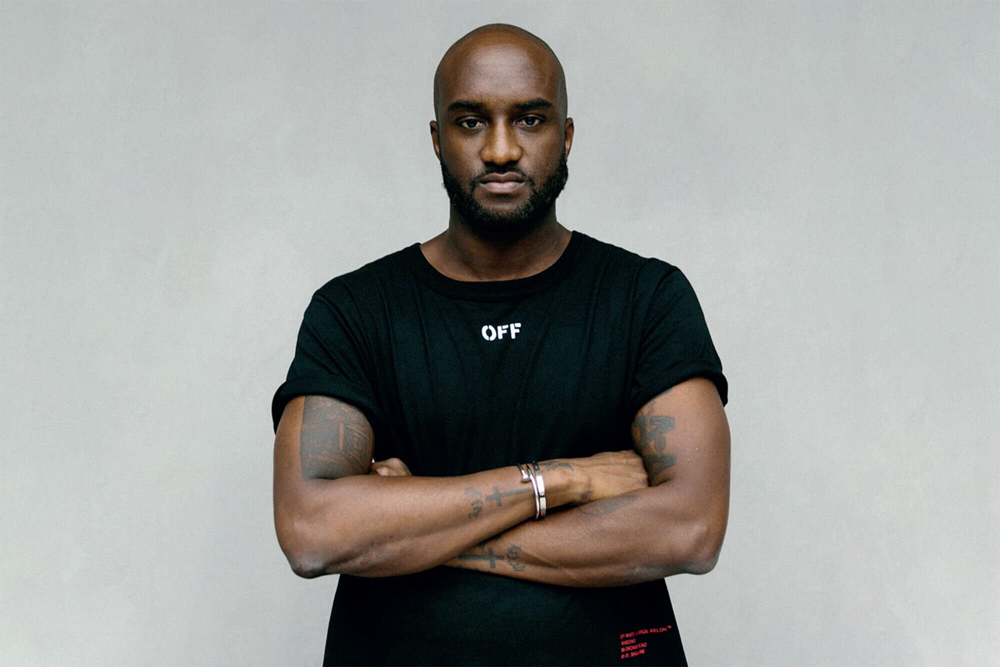

Behind Off-White,
the fashion phenomenon
Virgil Abloh founded Off-White™ in 2013 as a multi-platform creative endeavor, a space for his continuous experimentation. The main medium being fashion yet he combined ideas of streetwear, luxury, art, music, and architecture. Virgil's visionary approach to the medium of fashion remains iconoclastic and profoundly conceptual yet accessible to a broad global audience.

“When creativity melds together with global issues, I believe you can bring the world together.” - Virgil Abloh
 Inspiring change:
Virgil Abloh's legacy
In November 2021, the sad news of his death as a result of a strange and aggressive cancer that had been diagnosed two years ago was announced. His premature disappearance truncated his aspirations to be the Karl Lagerfeld of the 21st century. Visionary and messiah of streetwear, he introduced his particular vision of fashion into the world of sneakers and influenced a whole new generation of consumers.